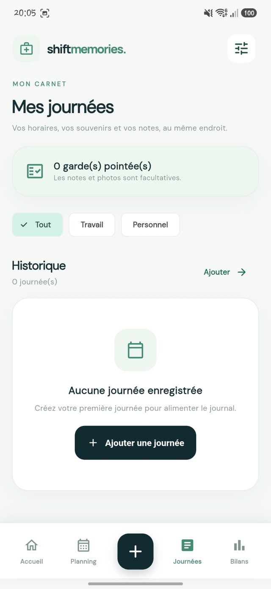

Un planning lisible
Vos gardes et votre vie personnelle sur un même calendrier, repérées par couleur.
POUR LES SOIGNANTS
ShiftMemories est l’agenda des soignants : planning, pointage, bilans du mois et souvenirs de vos journées, au même endroit. Sur Android, iPhone et ordinateur.
Vos données restent sur votre appareil
CE QU’ELLE FAIT
Vos gardes et votre vie personnelle sur un même calendrier, repérées par couleur.
Arrivée, départ : c’est noté. Les notes et les photos sont facultatives, pour garder le souvenir de la journée.
Heures prévues et réalisées, mois par mois, avec un montant estimé brut. Fini le recopiage à la main.
Français, English, Deutsch, Italiano et Español.
Aucun compte à créer : vos gardes, notes et photos sont stockées sur votre appareil.
APERÇU
Captures de la vraie application, testée sur Android.

MON HISTOIRE
Chaque journée compte.
Je m’appelle Jordan, je suis étudiant à la Hochschule Kaiserslautern. Tout est parti de Sorenza, infirmière libérale : des journées longues, des horaires qui changent d’un mois à l’autre et, à la fin, des heures à recopier à la main.
Je n’avais jamais programmé. J’ai appris pas à pas, avec une idée simple : lui donner un outil calme qui note ses gardes, compte ses heures et garde un souvenir de ses journées.
Ce qui devait rester un projet personnel est devenu ShiftMemories, ouverte à tous les soignants qui jonglent avec leur temps.
Jordan, créateur de ShiftMemories
TÉLÉCHARGER
L’application Android en APK, et la version en ligne pour iPhone et pour ordinateur.
Installez l’APK directement sur votre téléphone.
Télécharger l’APKAucun téléchargement : ouvrez la version en ligne et ajoutez-la à votre écran d’accueil.
Ouvrir sur iPhoneUtilisez ShiftMemories dans votre navigateur, sur grand écran.
Ouvrir sur ordinateurBon à savoir : l’application Android et les versions en ligne sont séparées. Leurs données ne se synchronisent pas (pour l’instant) et restent stockées sur chaque appareil. Pensez à exporter une sauvegarde.
QUESTIONS
Oui, avec la version en ligne ouverte dans Safari et ajoutée à l’écran d’accueil. Il n’existe pas encore de version native sur l’App Store.
Il n’y a ni compte ni serveur ShiftMemories : vos gardes, notes et photos restent sur votre appareil.
Pas encore. Chaque version garde ses propres données. Une synchronisation avec compte pourra venir plus tard.
Parce que l’APK ne vient pas du Play Store. Téléchargez-le uniquement depuis ce site ou depuis la page officielle des versions sur GitHub.
Non. ShiftMemories sert à organiser votre activité : n’y saisissez pas de données qui identifient des patients.